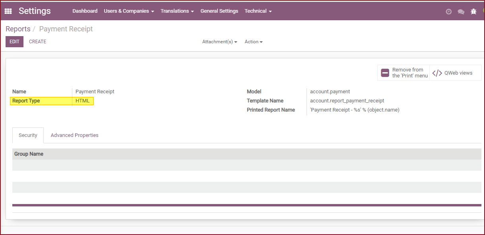
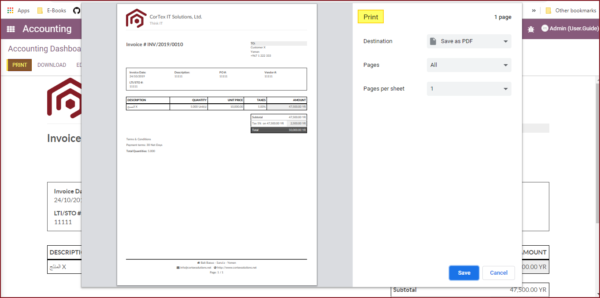

Features
This module allows you to send report to printer directly after previewing the html report.
Note: This module is tested and working in Odoo 15.0 Community Editions.
First, you need to change your reports type to HTML by enabling the developer mode and going to Settings -> Technical -> Reports. then open the report you wish to edit and change the type to HTML instead of PDF.
If you want to change the type for a group of reports at once, you can select them from the list view and export them to excel and modify the report type to HTML in that excel file then import it.
Once you click the Print button from any Odoo screen like an invoice, the HTML report will be shown then you can either Print the report or Download it.
If you are working on Google Chrome, once you click on the Print button the print screen will pop-up as you can see in the below screenshot. If you are using Firefox or IE, it will frist open the PDF in a new Tab then you can print it from there.
You will get 90 days free support for any doubt, queries, and bug fixing (excluding data recovery) or any type of issue related to this module.
This is applicable from the date of purchase
Please note that it's not allowed to distribute this module after purchase!
For any support or help related to Odoo Implementation, customization or development, please feel free to mail us on Our Sales Email.